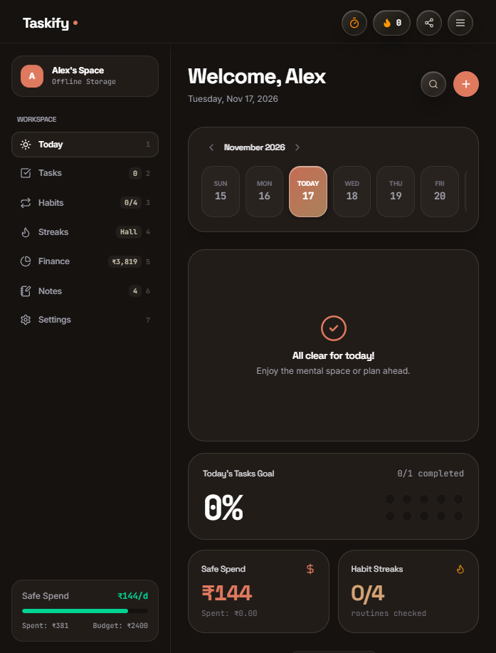
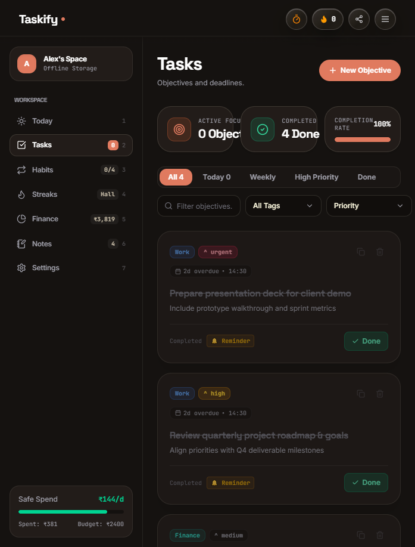
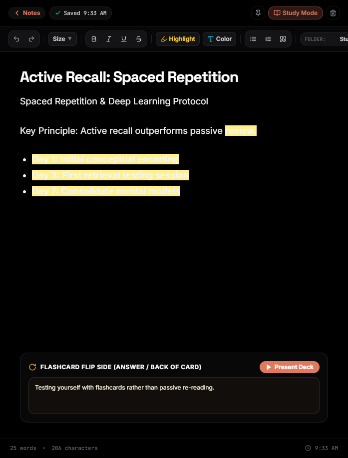
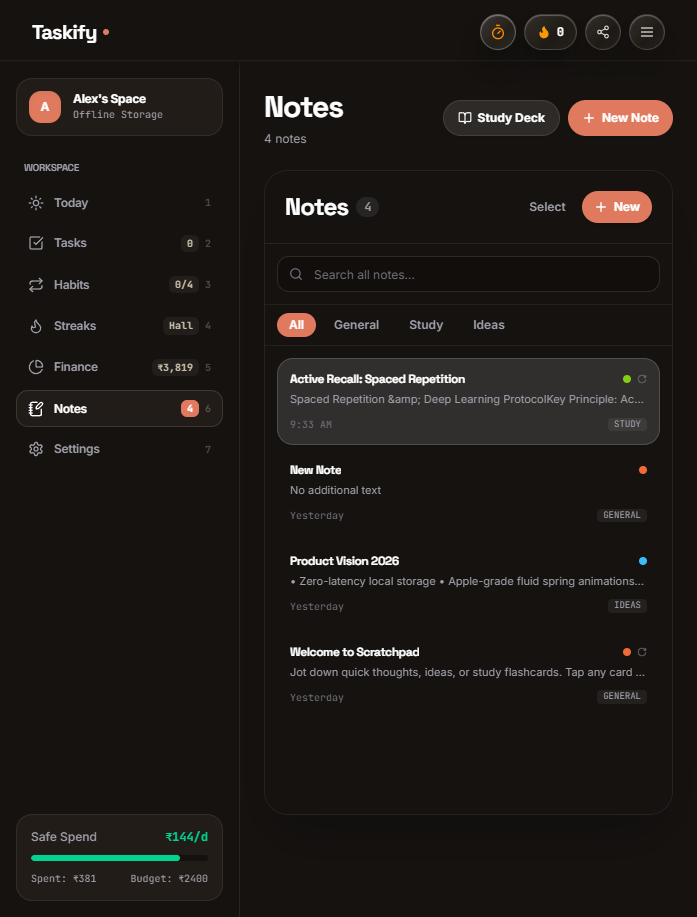
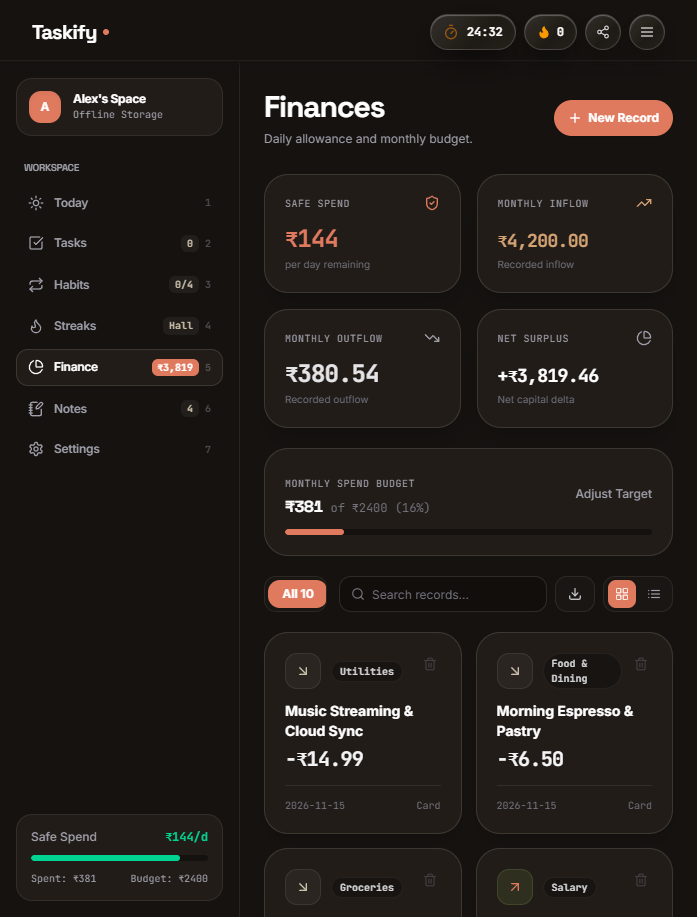

Your daily life, organized. 100% PRIVATE and calm.
Tasks, habits, notes, focus cycles, and everyday spending in one tactile app. Zero subscriptions, zero tracking, and 100% stored directly on your device.
Designed with restraint and depth.
No web wrappers or generic templates. Taskify is engineered with tactile design foundations, fluid spring physics, and solid surface palettes.





Everything you need to master your day.
Software you actually own.
Most productivity apps are rented services tied to recurring fees and corporate clouds that can inspect your data or shut down. Taskify stores all relational tables directly on your device using IndexedDB (Dexie.js). Zero accounts, zero tracking, and complete data portability with one-click JSON export.
Sub-16ms Motion
Built on tactile design foundations with hardware-composited tape motion, exponential momentum handoff, and zero React re-render lag during gestures.
Guilt-Free Daily Budget
Know exactly how much you can comfortably spend today based on your monthly budget and remaining calendar days. Zero complex accounting.
Atomic Habits & Streaks
Build routines step by step. Celebrate unbroken runs with the live flame counter, track your 14-week consistency heatmap matrix, and protect your streak with Freeze Shields.
Built for deep thought and calm execution.
Eliminate mental clutter. Hover over each card to preview capabilities. Draft thoughts in a clean notepad and enter flow state with the circular focus timer.
Distraction-Free Notepad
Continuous autosave on every keystrokeFormat text with bold, italic, highlights, code blocks, bulleted lists, and color tags. On mobile, the editor takes over the full viewport to eliminate distractions.
Precision Focus Timer
Visual progress ring and tick soundsDial in custom focus intervals or select classic presets (25m, 45m, 60m). Features screen edge progress illumination and ambient chimes for deep work sessions.
25 Handcrafted Themes
4 curated aesthetic palettesPersonalize with 25 distinct themes across Soft & Cozy (Espresso Terracotta, Lavender Mist, Peach Cashmere, Pistachio Cream, Forest Rose, Kyoto Matcha, Amber Dune), Minimalist (Nordic Frost, Sage Studio, Monochrome Pure, Warm Sandstone), Dark & OLED (Obsidian Pure, Velvet Burgundy, Tokyo Neon, Midnight Ocean), and Aesthetic Pastel.
Local-First Cryptographic Vault.
Zero telemetry. Pure local persistence. No user accounts required.
f4a1 9b88 e0c2 d317 88a4 12df b56c 99aa 01ef 77c3 44bc e190 3a51 2f4d...
db.version(1).stores({
tasks: '++id, title, completed, priority, dueDate, createdAt',
habits: '++id, title, frequency, streak, createdAt',
habitLogs: '++id, habitId, date, completed',
notes: '++id, title, isPinned, colorTag, updatedAt',
transactions: '++id, amount, category, type, date',
settings: 'key, value'
}); // 100% Client-Side. No remote connection string.Available on all your devices.
Download native packages for your computers and Android phone. Zero accounts required to install and start using.
Windows
For Windows 10 & 11 PCs and laptops.
- Global hotkeys (Cmd+K, 1-7)
- Full offline IndexedDB engine
- Standalone executable package
macOS
For Apple Silicon (M1-M4) & Intel Macs.
- Trackpad gestures and fluid physics
- Spotlight command palette search
- Dark mode auto synchronization
Linux
For Ubuntu, Debian, Fedora, Arch & openSUSE.
- Universal .AppImage & .deb packages
- Zero dependency standalone bundle
- Native Wayland & X11 acceleration
Android
Direct standalone APK package.
- Direct standalone APK installation
- Screen edge progress focus timer
- Zero background battery drain